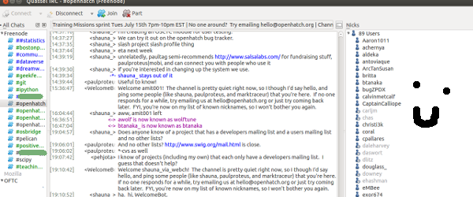
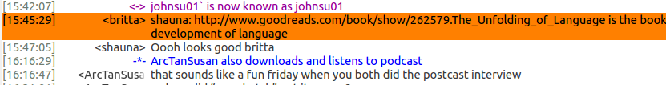
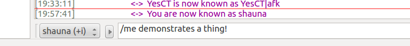

These are called the "four freedoms".
"Open source is important to me because it is a way to learn, to practice, and to share with others." - Angel "Java" Lopez
"The sense and strength of community is so powerful, that I couldn't have been happier to be a part of this movement, amazed and humbled by the craziest ideas and work that get shared. In simple words, it changed my life." - Soumith Chintala
"To me Open Source is a tool in the activist toolbox. It's how we can get things done without having to wait and ask permission, without having to build every. single. thing. we want before we can accomplish great things. We build on each other's work, we build up each other's work together." - Lukas Blakk
IRC is decentralized, which means no one organization or company controls it. Instead, individuals host networks. Make sure your channel AND network are correct!
You can join a channel from the command line!
/join #openhatch
If you use someone's nickname, most clients highlight that so it's easy for them to see. It's considered good form to include the nicks of people you are addressing, although you don't need to do this for every single line.
You can start a private conversation with someone using this command:
/query nick messsage
It is considered good form to ask in the public channel whether you can send a private message to someone.
You can do actions.
You can register your nickname!
/msg NickServ REGISTER password youremail@example.com
Then, when you return to the network after being away, you can identify yourself with your registered name and password:
/msg NickServ IDENTIFY account password
If you want to be persistently logged in to IRC, you can:
use the Quassel server component
(we can help you!)
If you want to log into IRC quickly and don't have a client set up, try webchat:
Want to learn more? Try #irchelp!
Example trackers:
Explore the trackers and list what they have in common. Don't forget to click through to individual issues!